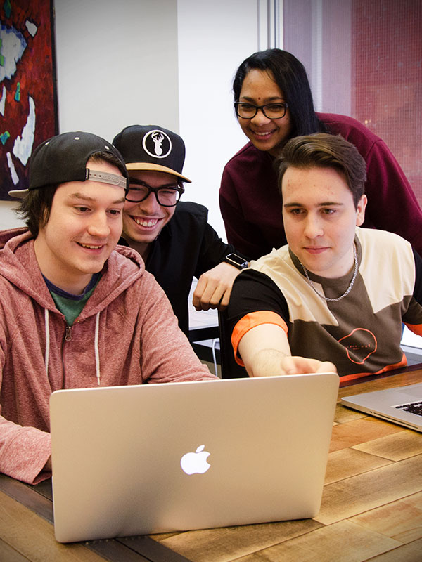

NOUVEAU DÈS L’AUTOMNE 2018 BAISSE DES PRÉALABLES EN MATHÉMATIQUE!
TECHNIQUES DE L’INFORMATIQUE 420.B0
POURQUOI CHOISIR L’INFORMATIQUE ?
Si tu souhaites concevoir des applications Web, développer des logiciels, travailler avec les nouvelles technologies et apprendre par des projets concrets, on est fait pour s’entendre! En Techniques de l’informatique, tu auras la chance de travailler en équipe en plus d’acquérir des compétences en sécurité informatique et en support technique. De plus, avec deux stages rémunérés, tu pourras mettre en pratique tes connaissances et t’initier au monde du marché du travail tout en te faisant valoir auprès des employeurs.
TU APPRENDRAS ENTRE AUTRES À…
Programmer des applications pour appareils mobiles (téléphones intelligents et tablettes)
Réaliser des applications Web modernes
Développer des logiciels en équipe selon l’approche Agile
Exploiter des bases de données relationnelles et NoSQL
Coder dans une variété de langages informatiques
Travailler avec des serveurs d’entreprise, dont un mainframe IBM | UNIQUE AU QUÉBEC

PROGRAMMATION ET BASES DE DONNÉES
Nos cours en codification et programmation constituent une des forces du programme!
Développement Web (HTML5, CSS3, JavaScript, PHP et autres)
Traduction d’algorithmes en langage informatique
Développement d’applications mobiles
INSTALLATION ET GESTION D’ORDINATEUR
Vous apprendrez à mettre en place un parc informatique, à en optimiser la performance et à en gérer la logistique :
Installer les composantes physiques
Installer les systèmes d’exploitation et logiciels
Faire la gestion des utilisateurs et des droits d’accès
Diagnostiquer une panne et appliquer les correctifs
TU VEUX EN SAVOIR PLUS?
Véronique St-Pierre
Aide pédagogique individuelle
418 338-8591, poste 239
DEVIENS ÉTUDIANT D'UN JOUR
L’activité Étudiant d’un jour est offerte tous les jours et tu peux t’inscrire en ligne.
PRÊTS ET BOURSES
En t’inscrivant au Cégep de Thetford, tu peux faire la demande de prêts et de bourses.